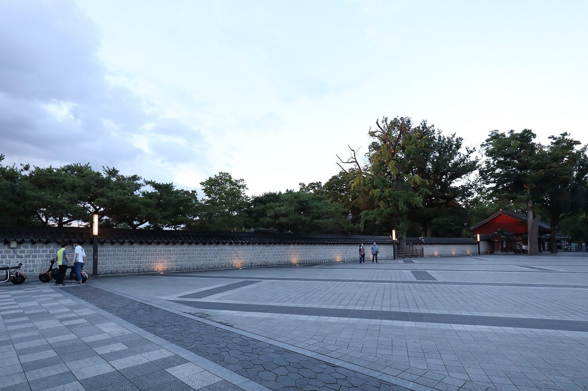

Jeonju
Home to Korea's largest hanok village and a city famous for its food, especially bibimbap. A relaxed place for a night or two, with easy train links from Seoul.

Planning a trip to Jeonju
Getting there
KTX trains run from Seoul (Yongsan) to Jeonju Station in under two hours, and express buses from Seoul take about two and a half to three hours. From the station or bus terminal, a short taxi ride reaches the hanok village.
How long to stay
One day covers the Hanok Village, Gyeonggijeon Shrine, Jeondong Cathedral and the food. Stay overnight to see the village lit up in the evening and visit Nambu Market's night stalls on weekends.
Getting around
The hanok village and the old town are compact and best on foot. Taxis and city buses are easy for the station and other districts.
When to go
Spring and autumn are pleasant for walking; weekends and holidays are busy, so go early in the day. Jeonju is famous for bibimbap and street food at any time of year.
Where to stay
Sleeping in a hanok guesthouse inside the village is the experience most visitors come for; expect floor mattresses and paper doors. Hotels outside the village are cheaper and quieter.
What to see first
Jeonju Hanok Village has more than 600 traditional houses, many now guesthouses, cafes and craft shops. Gyeonggijeon Shrine holds a portrait of King Taejo, the founder of the Joseon dynasty, and Jeondong Cathedral stands right opposite. Climb to Omokdae for a view over the tiled roofs, then walk to Nambu Market.
What to eat
Jeonju is famous as the home of bibimbap, served with many toppings in a hot or brass bowl. Kongnamul gukbap, a bean sprout soup eaten for breakfast and hangovers, is the other local dish. On weekend evenings, the night market at Nambu Market sells street food, and the youth mall upstairs has small restaurants and bars.
Good to know
The hanok village gets very busy on weekends and holidays; arrive in the morning or stay the night to enjoy it quietly. Hanbok rental shops line the main streets. Jeonju is also a good base for a day trip to Maisan and its temple of stone towers.
Places worth your time in Jeonju
The Korean name is the one to show a taxi driver or paste into Naver Map or KakaoMap.
Jeonju Hanok Village 전주한옥마을
Hundreds of traditional houses in one district, many of them guesthouses, tea rooms and craft shops. Renting hanbok for a few hours is popular here, and the lanes are prettiest early in the morning and after dark.
Gyeonggijeon Shrine 경기전
A shrine built in 1410 to hold the portrait of King Taejo, founder of the Joseon dynasty, with a small bamboo grove inside the walls.
Jeondong Cathedral 전동성당
A red-brick Catholic cathedral from the early 1900s, directly opposite Gyeonggijeon and one of the most photographed buildings in the city.
Omokdae 오목대
A pavilion on a low hill at the edge of the hanok village. A ten-minute climb gives you the view over all the tiled roofs.
Nambu Market 남부시장
The old market just south of the village, known for kongnamul gukbap (bean sprout soup with rice) in the morning and a night market on weekend evenings.